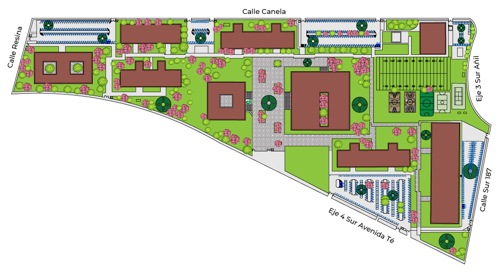

MAPA INTERACTIVO UPIICSA
Instrucciones Explora los edificios haciendo clic en el mapa.

Edificio de Sección de Estudios de Posgrado e Investigación (SEPI)
Edificio de Ligeros
Edificio de Formación Básica
Edificio de Estudios Profesional Genéricos
Edificio de Gobierno
Edificio de Actividades Culturales
Edificio de Desarrollo Profesional Específico
Edificio de Competencias Integrales e Institucionales
Edificio de Gimnasio
Edificio de los Espejos